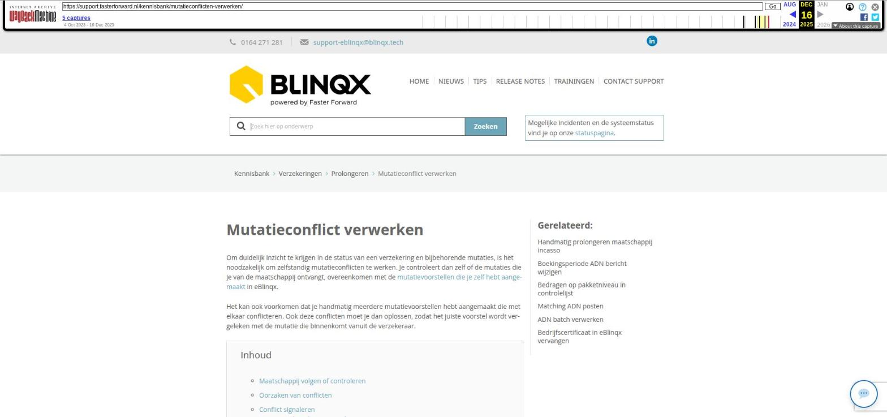

Mutatieconflict verwerken

Tekstinhoud
Title: Mutatieconflict verwerken | Support
URL: https://web.archive.org/web/20251216025759/https://support.fasterforward.nl/kennisbank/mutatieconflicten-verwerken/
Source element: <article>
---
Mutatieconflict verwerken
Om duidelijk inzicht te krijgen in de status van een verzekering en bijbehorende mutaties, is het noodzakelijk om zelfstandig mutatieconflicten te werken. Je controleert dan zelf of de mutaties die je van de maatschappij ontvangt, overeenkomen met de mutatievoorstellen die je zelf hebt aangemaakt in eBlinqx.
Het kan ook voorkomen dat je handmatig meerdere mutatievoorstellen hebt aangemaakt die met elkaar conflicteren. Ook deze conflicten moet je dan oplossen, zodat het juiste voorstel wordt vergeleken met de mutatie die binnenkomt vanuit de verzekeraar.
Inhoud
Maatschappij volgen of controleren
Oorzaken van conflicten
Conflict signaleren
ADN berichten verwerken
Productkaart en tabblad mutatievoorstellen
Conflict oplossen
Goed- en afkeuren
Overzicht aanpassingen aan linkerkant
Mutatievoorstellen verwerken
Conflict opgelost
Maatschappij volgen of controleren
Er zijn twee werkwijzen als het gaat om mutatievoorstellen en mutatieconflicten, namelijk maatschappij volgend en maatschappij controlerend.
Maatschappij volgend
Bij maatschappij volgend is de mutatie afgerond als de mutatie van de maatschappij is doorgevoerd. Er ontstaan minder mutatieconflicten.
Maatschappij controlerend
Bij maatschappij controlerend is de mutatie afgerond als de mutatie van de maatschappij is gecontroleerd en is goedgekeurd. Bij deze werkwijze ontstaan er meer mutatieconflicten, omdat je de maatschappij controleert. Ook ga je anders om met mutaties die in behandeling staan.
Inrichting
Voordat je start met mutatieconflicten, geef je aan een medewerker van Blinqx door of je maatschappij volgend of controlerend wilt werken. Wij richten dit dan voor je in.
Als je al werkt met mutatievoorstellen en je wilt je instellingen wijzigen, stuur dan een e-mail naar support-eblinqx@blinqx.tech. Vermeld hierbij welke werkwijze je wilt toepassen.
Oorzaken van conflicten
Als je bij het aanmaken of verwerken van een mutatie een conflictmelding krijgt, moet je deze verwerken.
Er zijn verschillende oorzaken voor mutatieconflicten. Hier drie voorbeelden:
Mutatie van de maatschappij (via ADN of Aplaza) komt niet overeen met het mutatievoorstel in eBlinqx.
Mutatie die een gebruiker handmatig heeft aangemaakt heeft op één mutatiedatum meerdere mutatievoorstellen voor dezelfde polis.
Er een (onverwachte) mutatie binnenkomt met een mutatie in het verleden
Een mutatieconflict los je vervolgens op door de juiste mutatie te kiezen. Deze mutatie wordt dan uiteindelijk doorgevoerd in eBlinqx op de mutatiedatum. Let op: de gegevens worden alleen aangepast in de productkaart. De financiële gevolgen van de mutaties worden altijd gedaan anders heb je geen aansluiting met je rekening courant.
Conflict signaleren
Bij het verwerken van binnengekomen mutatieberichten (ADN inbox en Aplaza inbox), in de productkaart van de verzekering (klantdossier) én in het tabblad 'Mutatievoorstellen' zie je wanneer er een mutatieconflict is.
Wanneer je op één van deze plekken een melding ziet, klik je hierop om het conflict op te lossen. Er opent dan een pop-up (zie paragraaf 'Conflict oplossen').
ADN berichten verwerken
Een batch met binnengekomen verzekeringsmutaties afronden, kan alleen als alle mutatieconflicten zijn opgelost. Wanneer er een waarschuwingsdriehoek zichtbaar is, is er sprake van een conflict. Deze driehoek is zichtbaar in de regel van de post in de batch zelf en in het overzicht van alle batches.
ADN VERWERKEN MET MUTATIEVOORSTELLEN
Boekingen m.b.t. mutaties
Boekingen worden altijd aangemaakt, ongeacht of de conflicten zijn opgelost of niet. Indien je als kantoor zelf incasseert, is het wel noodzakelijk dat je de conflicten oplost.
Als je in een binnengekomen batch zit, kun je de boekingen aanmaken, zonder de conflicten op te lossen. Alleen om een batch af te ronden en de wijzigingen in de polis door te voeren, moet je de conflicten oplossen.
Productkaart en tabblad mutatievoorstellen
In het klantdossier zie ook wanneer er een mutatieconflict voor een polis is. Zodra je klikt op 'Conflict' wordt de conflict pop-up direct geopend waarin je de details ziet.
De conflicten zie je ook terug in het tabblad 'Mutatievoorstellen'.
Conflict oplossen
Als je op de conflictmelding klikt, opent er een pop-up. Hier zie je twee of meer mutatievoorstellen.
"Bron" bovenaan toont of je het hebt ontvangen van de maatschappij (ADN of Aplaza) of zelf hebt aangemaakt.
De gekleurde lijnen geven aan waar de voorstellen afwijken van de hoe de verzekering (inclusief dekkingen) momenteel in eBlinqx staat.
Ook staat de reden van het conflict in de meeste gevallen vermeldt.
Voorbeeld
Goed- en afkeuren
In de pop-up kies je vervolgens welke mutatievoorstellen je goedkeurt voor deze polis. Je bepaalt zelf welke gegevens je in eBlinqx wilt zetten, zodat dit voor jouw organisatie duidelijk is.
Bijvoorbeeld: als de mutatie van de maatschappij (via ADN) bijvoorbeeld correct is, dan keur je die goed. Het mutatievoorstel die je handmatig had aangemaakt klopt ondertussen niet meer, en daarom keur je deze af.
Overzicht aanpassingen aan linkerkant
Zodra je een voorstel goed- of afkeurt, wordt het overzicht aan de linkerkant automatisch bijgewerkt. Zo heb je duidelijk in beeld welke aanpassingen er worden doorgevoerd en per welke datum.
Er wordt aangeduid welke dekkingen, verzekerde objecten, verzekerde personen en premieopbouw afwijkt. Ook als de datum van het mutatievoorstel afwijkt, wordt dit aangeduid.
Mutatievoorstellen verwerken
Zodra je alle mutatievoorstellen hebt goed- of afgekeurd en je tevreden bent met het resultaat aan de linkerzijde, klik je linksonder op "Verwerken".
Conflict opgelost
In de verzekering in het klantdossier zie je nu aan de rechterkant dat er geen conflict meer is. Daarnaast zie je per wanneer de aankomende mutatie ingaat.
Laatste update: 15 oktober 2025
Tagged: mutatie
Was deze informatie nuttig?
Ja Nee